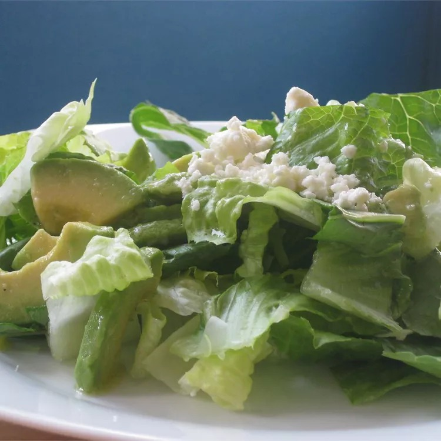

Salad Recipe
Home

What is Salad?
Yummy green feta salad, great for summer evenings!
Add as many fruits and vegetables as you wish - I usually add pears or tangerines depending on the season.
- 4 tablespoons olive oil
- 2 tablespoons white wine vinegar
- 1 tablespoon Dijon mustard
- 1 teaspoon chopped fresh parsley
- 4 cups mixed salad greens
- 2 ounces feta cheese, crumbled
- In a large bowl, whisk together the olive oil, white wine vinegar, mustard, salt, pepper, sugar, parsley, lemon juice and garlic. Add the avocado, and stir to coat with the dressing.
- Just before serving, add the salad greens, and toss to coat with dressing. Sprinkle sliced almonds and feta cheese over the top.